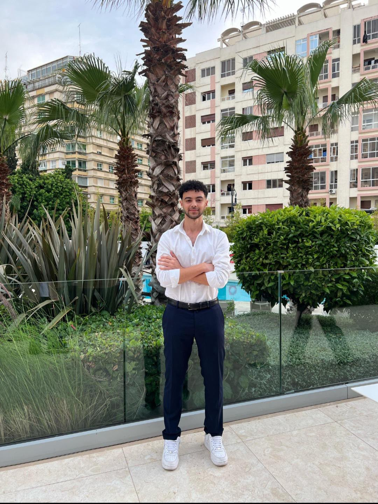

Technicien spécialisé en Cloud et Infrastructure IT, basé à Salé, en Bachelor Big Data & IA. Disponible immédiatement pour un stage ou un poste junior.

Profil
Technicien spécialisé en Cloud Computing et Infrastructure IT (ISTA NTIC Tanger), actuellement en Bachelor Big Data & Intelligence Artificielle à l'EST Salé. Expérience terrain en support technique, implémentation et administration Windows/Linux chez Caisse Manager, et en architecture Cloud sur Microsoft Azure pour l'hébergement de LLM chez MX4.AI.
Expérience professionnelle
Technicien Support & Implémentation
2026 · 5 moisSupport technique client et configuration des modules métiers pour une solution SaaS de point de vente (POS). Diagnostic et résolution d'incidents sur serveurs de production : erreurs HTTP (502, 409, 405, 400) sur backend Express/Node.js/MongoDB, conflits d'IP d'imprimantes réseau, connectivité des balances, impression de tickets KDS. Administration Windows/Linux (Ubuntu), conteneurs Docker et processus PM2, accès à distance (RustDesk, AnyDesk) pour le support client.
Stagiaire — Cloud & Intelligence Artificielle
2025 · 1 moisÉtude du fonctionnement des grands modèles de langage (LLM) et de leurs besoins en ressources : calcul (GPU/CPU), mémoire, stockage, scalabilité. Conception d'une architecture Cloud sur Microsoft Azure pour héberger un LLM, avec dimensionnement de l'infrastructure. Sensibilisation au monitoring, à la supervision et à la gestion des coûts.
Stagiaire — Réseaux & Installation
2025 · 1 moisCâblage réseau (cuivre et fibre), adressage IP (sous-réseaux, statique/DHCP), mise en place d'équipements réseau (switchs, routeurs, points d'accès). Installation et configuration de postes de travail et de caméras de vidéosurveillance (CCTV). Dépannage matériel et réseau de premier niveau sur site.
Formation
Bachelor en Technologie — Big Data & Intelligence Artificielle
2026 – PrésentBig Data et Intelligence Artificielle, en temps aménagé parallèlement à l'activité professionnelle.
Cycle Ingénieur — Informatique & Réseaux
2025–2026Première année du cycle ingénieur en informatique et réseaux.
Technicien Spécialisé — Cloud Computing
2023–2025Infrastructure digitale, spécialisation Cloud Computing. Participation au PIE.
Baccalauréat — Sciences Physiques-Chimie
2022–2023Baccalauréat scientifique, option Sciences Physiques.
Projets
Architecture Cloud pour LLM
2025Architecture Microsoft Azure pour héberger un LLM.
Système de Vote Électronique
2025Application web de gestion d'élections et base de données relationnelle.
Gestion d'Établissement Scolaire
2025Application orientée objet pour la gestion des élèves, professeurs et classes, en architecture modulaire.
Compétences
Cloud
Sécurité
Systèmes
Dev
Bases
Outils
Certifications
Langues
Contact
Disponible immédiatement pour un stage ou poste junior en Cloud Computing, Infrastructure IT ou Support Technique.